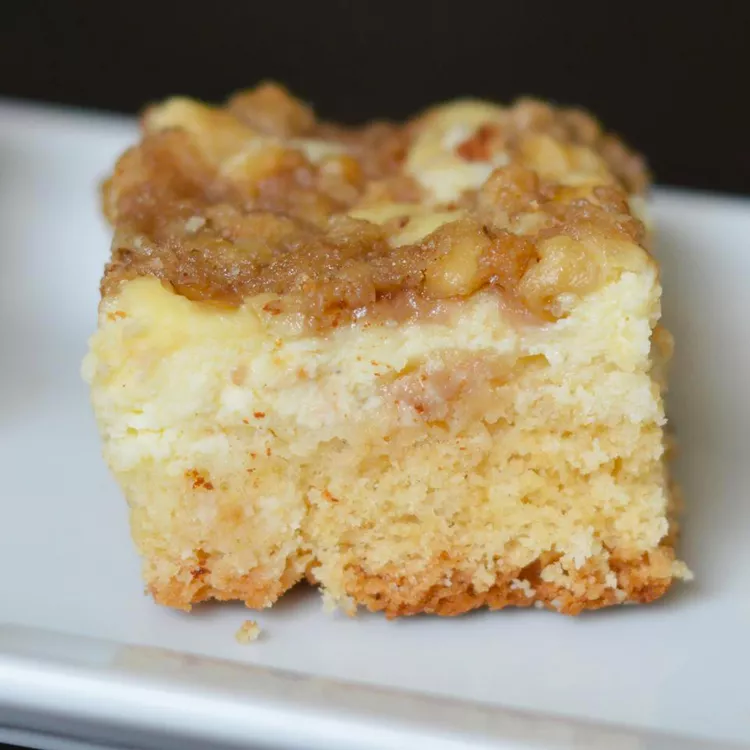

Polish Cream Cheesecake

Description
Delicious and warm. Wake up and smell the coffee cake. I love this recipe, although it is a bit time-consuming.
Ingredients
- 1 cup white sugar
- 1/2 cup egg butter
- 1 egg
- 1 cup sour cream
- 1 teaspoon vanilla extract
- 3 cups all-purpose flour
- 1 teaspoon baking soda
- 1 teaspoon baking powder
Filling:
- 2 packages cream cheese, softened
- 1/2 cup white sugar
- 1 egg
Topping:
- 1/2 cup chopped pecans
- 1/2 cup brown sugar
- 1/3 cup all-purpose flour
- 1/3 cup butter
Directions
- Preheat oven to 350 degrees. Grease 9x13 inch baking dish
- Beat 1 cup white sugar, 1/2 cup butter, and 1 egg in a bowl until smooth. Add sour cream and vanilla extract; mix well. Stir in 3 cups flour, baking soda, and baking powder until mixture comes together in a sticky dough. Spread half the dough evenly into prepared baking dish.
- Beat cream cheese, 1/2 cup white sugar, and 1 egg in another bowl until smooth. Spoon mixture into baking dish over dough. Drop remaining half of dough by spoonfuls over cream cheese mixture.
- Mix pecans, brown sugar, 1/3 cup flour, and 1/3 cup butter in a bowl until mixture resembles a coarse crumble; sprinkle over dough.
- Bake in the preheated oven until a toothpick inserted into the center comes out clean, about 45 minutes.